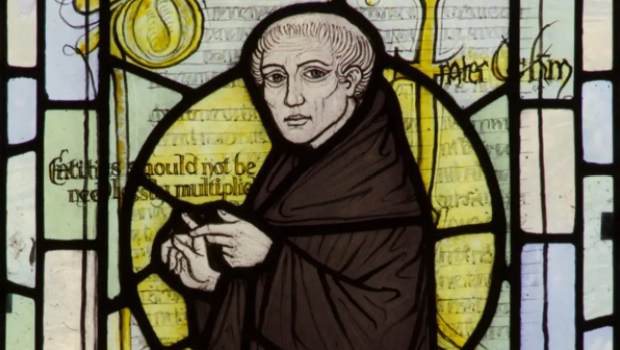

Entities should not be multiplied without necessity.
A philosophical Razor is a concept which helps in shaving out/ cutting out/eliminating the unlikely or irrelevant explanations and assumptions about a topic or a concept. Occam's Razor is named after William of Occam. Also known as the law of parsimony is a problem solving principle that states that the simplest explanation is the right one. This philosophical razor advocates that when presented with competing hypotheses about the same prediction, one should select the solution with the fewest assumptions, [3] and that this is not meant to be a way of choosing between hypotheses that make different predictions.
